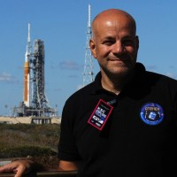
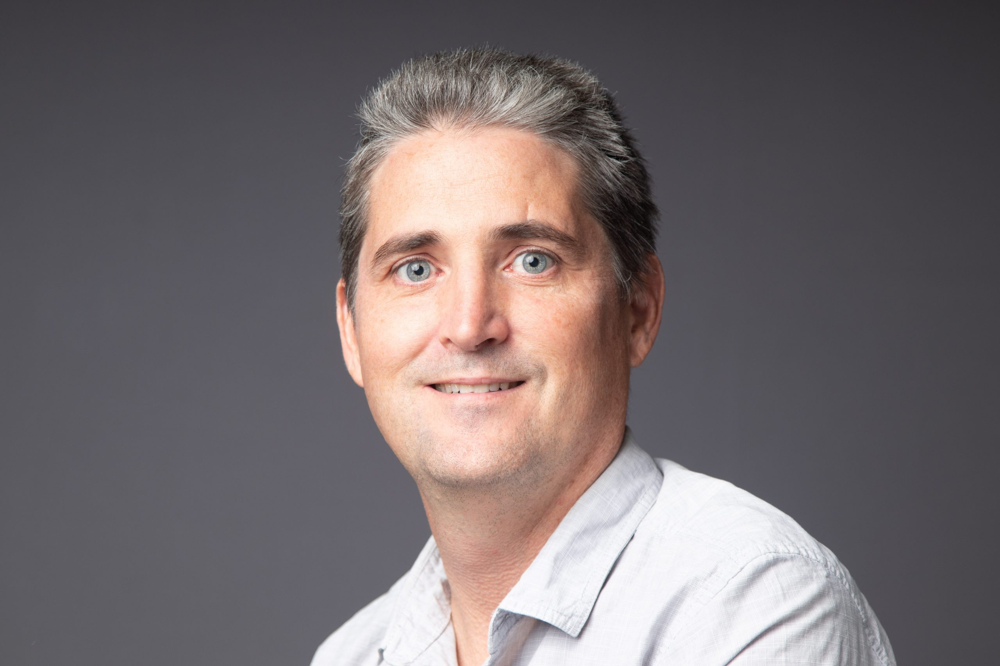
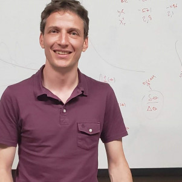
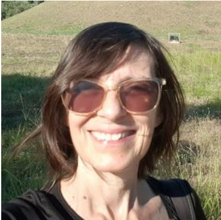
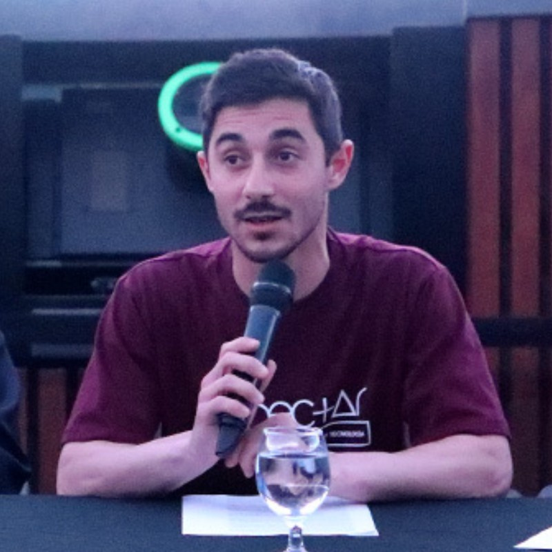
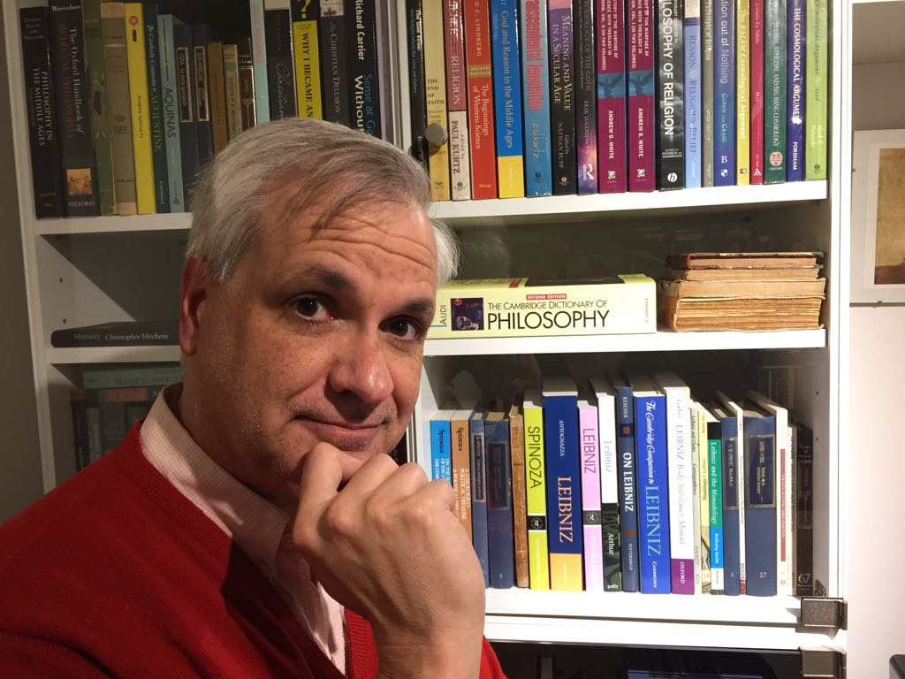
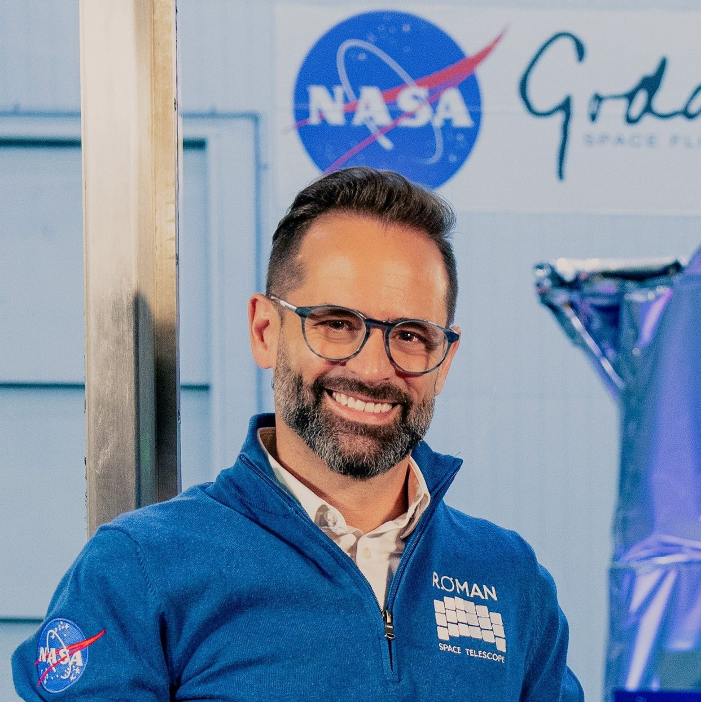
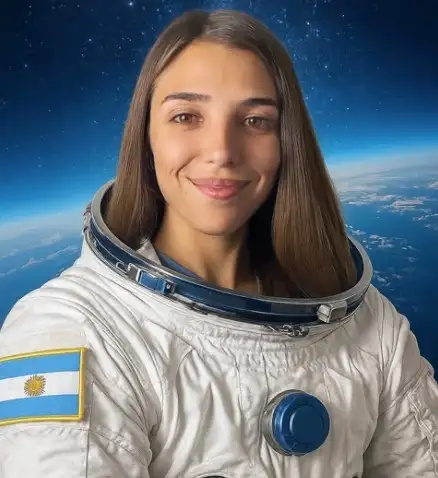

SPACE WEEK
Charlas y mini entrevistas para despertar curiosidad sobre gente que hace ciencia y tecnología de punta en el país, en el área espacial.
Cronograma
Segmentos de 40 minutos, mañana y tarde, para que ambos turnos puedan participar de alguna charla. Se dictan por aula según inscripción — anotate para asegurar tu lugar.
Martes 6 de octubre
Horarios sujetos a confirmaciónTurno mañana
Turno tarde
Miércoles 7 de octubre
Horarios sujetos a confirmaciónTurno mañana
Turno tarde
Jueves 8 de octubre
Horarios sujetos a confirmaciónTurno mañana
Turno tarde
Speakers / Entrevistados
Especialistas confirmados y en contacto para esta edición. Tocá la tarjeta de un speaker confirmado para ver el tema de su charla y las preguntas guía.

Hernán Socolovsky
Ingeniero del Departamento de Energía Solar de la CNEA; desarrolla paneles solares para uso espacial, entre ellos ATENEA, que voló en Artemis II.
ConfirmadoDiego Janches
Astrofísico, investiga en NASA Goddard; colabora con la UNLP en el radar de meteoros de Río Grande. Tiene un asteroide con su nombre.
Confirmado
Lucas Cieza
Astrónomo, lidera el proyecto Odisea, que descubrió el exoplaneta más joven observado hasta la fecha (Elías 2-24 b).
ConfirmadoDra. Susana Landau
Investigadora en el IFIBA (CONICET-UBA), especializada en cosmología.
En contacto
Dr. Rodrigo Fernando Díaz
Investigador en ICAS-UNSAM e ITBA, especializado en el estudio de exoplanetas.
En contacto
Dra. Beatriz García
ITeDA — Colaboración internacional en el Observatorio Pierre Auger.
En contacto
Matías Terpolilli
Facultad de Ciencias Astronómicas y Geofísicas de la UNLP (FCAG).
En contacto
Dr. Gustavo Romero
Investigador del Instituto Argentino de Radioastronomía (IAR).
En contactoDra. Amina Helmi
Premio Kavli de Astrofísica 2026, Universidad de Groningen.
En contacto
Dr. Lucas Paganini
Investigador en el Goddard Space Flight Center de la NASA.
En contacto
María Noel de Castro Campos
Misión Axiom Space / SpaceX Dragon.
En contactoJosé De Castro Alem
Ingeniero químico (UNSa), cursando estudios en recursos y minería espacial.
En contactoRecuerdos del evento
Vamos a tener llaveros y pines personalizados de Space Week para repartir entre estudiantes y profesores — algo simple para llevarse de recuerdo.
Noticias y Destacados
Las últimas novedades sobre la organización del evento.
¡Fechas Confirmadas!
La Space Week se realizará los días martes 6, miércoles 7 y jueves 8 de octubre en las instalaciones de la escuela.
Reservá tu tarjeta
Próximamente vamos a publicar el formulario para reservar y personalizar tu tarjeta exclusiva de la Space Week.
Galería
El sector aeroespacial, nacional e internacional, y los especialistas que forman parte de esta edición.
Ubicación
Nos encontramos en el edificio central de la E.E.T. N°24 "Simón de Iriondo".